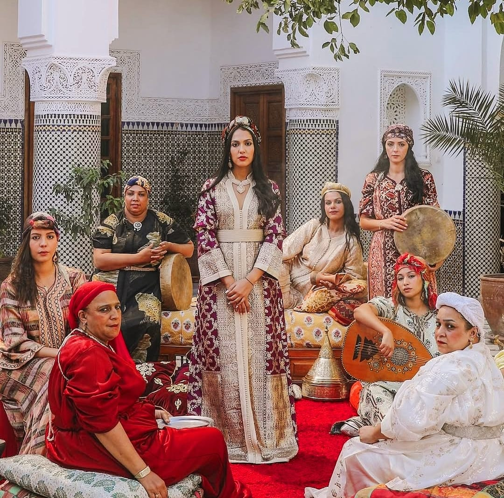

Morocco 🇲🇦
Known for its diverse rhythms and deep-rooted traditions, Morocco’s musical heritage reflects a unique fusion of Amazigh, Arab, Andalusian, and sub-Saharan influences that have shaped the country’s cultural and historical identity. From the hypnotic rhythms of Gnawa spiritual music to the emotive calls of Aita and the elegance of Andalusi orchestras, Moroccan music expresses both the regional variety and the shared cultural memory of its people. In this section, we explore how these musical expressions can be understood and represented using digital tools such as SPARQL queries, Wikidata’s knowledge graph, and large language models (LLMs). These technologies allow us to trace connections, uncover patterns, and examine how well Moroccan music is currently represented in digital environments, highlighting areas where information may still be lacking or fragmented.
| Query | Result |
|---|---|
|
SELECT ?genre ?genreLabel ?description ?image WHERE { ?genre wdt:P31/wdt:P279* wd:Q188451. # instance of music genre ?genre wdt:P495 wd:Q1028. # country of origin Morocco OPTIONAL { ?genre schema:description ?description. FILTER(LANG(?description) = "en") } OPTIONAL { ?genre wdt:P18 ?image. } SERVICE wikibase:label { bd:serviceParam wikibase:language "en". } } LIMIT 50 |
This query retrieves Moroccan music genres along with their English descriptions and images when available. It returns a selection of distinct musical genres that originate from Morocco, providing insight into the country’s diverse musical styles . |
|
SELECT DISTINCT ?artist ?artistLabel ?description ?image WHERE { ?artist wdt:P31 wd:Q5. # instance of human ?artist wdt:P27 wd:Q1028. # Moroccan citizenship The UNION clause to get either singers OR musicians { ?artist wdt:P106 wd:Q639669. # occupation: singer } UNION { ?artist wdt:P106 wd:Q36834. # occupation: musician } OPTIONAL { ?artist schema:description ?description. FILTER(LANG(?description) = "en") } OPTIONAL { ?artist wdt:P18 ?image. } SERVICE wikibase:label { bd:serviceParam wikibase:language "en". } } ORDER BY ?artistLabel LIMIT 100 |
This query retrieves Moroccan singers and musicians. The results include many artists, mostly old school, with fewer modern ones. |
|
SELECT ?band ?bandLabel ?description ?image WHERE { ?band wdt:P31/wdt:P279* wd:Q215380. # musical group or subclass ?band wdt:P495 wd:Q1028. # country of origin Morocco OPTIONAL { ?band schema:description ?description. FILTER(LANG(?description) = "en") } OPTIONAL { ?band wdt:P18 ?image. } SERVICE wikibase:label { bd:serviceParam wikibase:language "en". } } LIMIT 50 |
This query retrieves musical groups or bands originating from Morocco, including their English descriptions and images when available. It provides an overview of Moroccan musical ensembles, highlighting the diversity of group acts within the country's music scene. |
|
SELECT DISTINCT ?work ?workLabel ?description ?image WHERE { VALUES ?type { wd:Q7366 wd:Q482994 } # Q7366 = song, Q482994 = album ?work wdt:P31 ?type. # Instance of song or album ?work wdt:P495 wd:Q1028. # Country of origin Morocco OPTIONAL { ?work schema:description ?description. FILTER(LANG(?description) = "en") } OPTIONAL { ?work wdt:P18 ?image. } SERVICE wikibase:label { bd:serviceParam wikibase:language "en". } } LIMIT 100 |
This query retrieves Moroccan songs and albums by filtering for musical works originating from Morocco. The results returned only two songs, with no albums found, indicating limited coverage of Moroccan music works in the dataset. |
|
SELECT ?musician ?musicianLabel ?description ?image WHERE { ?musician wdt:P31 wd:Q5. # human ?musician wdt:P27 wd:Q1028. # Moroccan citizenship OPTIONAL { ?musician schema:description ?description. FILTER(LANG(?description) = "en") } OPTIONAL { ?musician wdt:P18 ?image. } FILTER( REGEX(LCASE(STR(?description)), "\brap\b|\brapper\b") && !REGEX(LCASE(STR(?description)), "photographer|cinematographer") ) SERVICE wikibase:label { bd:serviceParam wikibase:language "en". } } ORDER BY ?musicianLabel LIMIT 100 |
This query retrieves Moroccan musicians whose English descriptions include references to rap or rappers, but the results were skewed toward older artists (predominantly from the early 20th century), suggesting potential data inconsistencies or gaps in labeling contemporary Moroccan rap artists. |
|
SELECT ?artist ?artistLabel ?description ?image WHERE { ?artist wdt:P31 wd:Q5. # Instance of human ?artist wdt:P27 wd:Q1028. # Moroccan citizenship ?artist schema:description ?description. FILTER(LANG(?description) = "en"). FILTER( (CONTAINS(LCASE(?description), "amazigh") || CONTAINS(LCASE(?description), "berber")) && (CONTAINS(LCASE(?description), "singer") || CONTAINS(LCASE(?description), "musician")) ). OPTIONAL { ?artist wdt:P18 ?image. } SERVICE wikibase:label { bd:serviceParam wikibase:language "en". } } ORDER BY ?artistLabel LIMIT 100 |
This query retrieves Moroccan musicians with an Amazigh / Berber identity. It provides a short list of notable figures fitting that profile. |
|
SELECT ?item ?itemLabel ?description WHERE { { ?item wdt:P31 wd:Q7366. # instance of song } UNION { ?item wdt:P31 wd:Q482994. # instance of album } ?item wdt:P495 wd:Q1028. # country of origin: Morocco ?item schema:description ?description. FILTER(LANG(?description) = "en"). FILTER(CONTAINS(LCASE(?description), "amazigh")). SERVICE wikibase:label { bd:serviceParam wikibase:language "en". } } ORDER BY ?itemLabel LIMIT 50 |
This query retrieves Amazigh songs and albums originating from Morocco. However, no results were found in the dataset. |
The queries performed highlighted several notable gaps in the representation of Moroccan music within Wikidata. While a substantial number of Moroccan musicians were identified, the majority of these individuals belong to earlier generations, with a marked absence of contemporary or emerging artists. Despite the breadth of artists retrieved, only two songs were documented, and no albums were recorded, underscoring a significant imbalance between artist representation and documented musical works. Motivated by the importance of cultural preservation and the recognition of indigenous artistic contributions, I sought to focus on Amazigh music—a genre deeply rooted in Morocco’s cultural heritage. Yet, the queries returned a relatively small number of Amazigh artists and absolutely no songs or albums were on sight, which is shocking given its historical significance as the oldest and most authentic expression of Moroccan musical identity. This lack of representation suggests that native musical traditions remain marginalized in digital knowledge repositories, pointing to a critical need for more inclusive documentation and recognition of Morocco’s rich and diverse musical heritage. Therefore, I undertook a systematic effort to enrich Wikidata by manually editing and expanding entries related to Moroccan musicians across various genres, including but not limited to Amazigh artists. This involved carefully adding detailed information about their songs and albums to improve the completeness and accuracy of the dataset. These contributions aim to enhance the representation of Moroccan music and support better access to cultural knowledge for all users.
💬 Question: Indigenous melodies, particularly Amazigh music, is often less documented than modern genres. Let’s think step by step: What reasons might explain this lack of documentation? How could this impact the visibility of traditional artists? What could be done to help preserve and promote these types of music?
🗯️ ChatGPT Response :

🗯️ DeepSeek Response:

👾 Results comparison :
Both responses use clear and formal language. The ChatGPT answer is concise and easy to follow, while the DeepSeek response is more detailed and provides additional context, such as geographic and historical factors.Overall, the DeepSeek answer is preferable for its depth, but the ChatGPT response is effective for a quick overview.
With the help of ChatGPT, I managed to create an RDF representation of different types of Amazigh music in Morocco.

The integration of structured data, semantic technologies, and large language models has offered clearer insight into the digital representation of Moroccan music. It revealed both the richness of its musical heritage and the imbalance in how some traditional and contemporary genres are documented. The efforts I made to address this gap through improved data modeling and the use of advanced querying and prompting techniques demonstrate promising ways to enhance the visibility and preservation of these musical traditions.